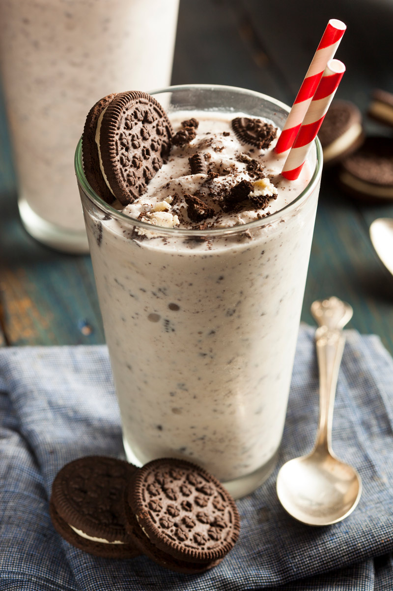

Oreo Shake Recipe

Ingredients
- Oreo Cookies: 6 to 8 (plus extra for topping)
- Vanilla Ice Cream: 3 large scoops
- Milk: ¾ cup of chilled milk (whole milk makes it richer)
- Optional: 1 tbsp chocolate syrup or a pinch of coffee powder for extra flavor
- For Garnish: Whipped cream, chocolate sauce, or extra crushed Oreos
Steps
- Combine: Place the Oreos, ice cream, chilled milk, and any chocolate syrup or vanilla extract into a blender.
- Blend: Blend on high until smooth and creamy. (Tip: If you like crunchy cookie chunks, just pulse the blender a few times instead of blending completely!)
- Serve: Pour the shake into a tall glass. Top with whipped cream and a sprinkle of crushed Oreos!
Home